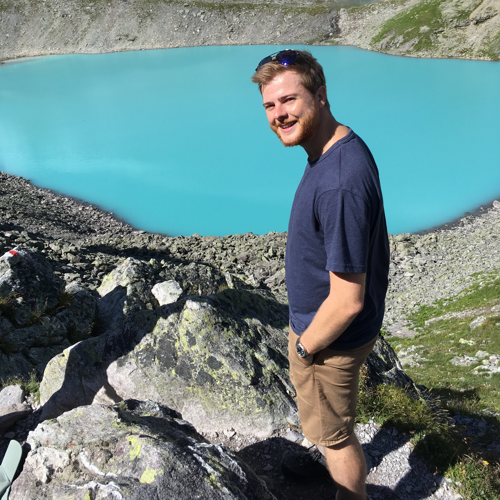

Who am I?

Hello there, I’m Dominic
Some information about my person:
Some information about my person:
- I have around 120 books on my bookshelf, all of which I have read
- There’s a didgeridoo next to my E-piano, guitar, saxophone, and ukulele
- I drink my coffee without milk or sugar
- I still don’t quite understand how I can learn programming languages easily when looking at my French grades
- Yes, Star Wars is one of my favorite movies (in case you recognized the Obi-Wan quote)
All musicians are subconsciously mathematicians
- Thelonious Monk, Jazz musician

Hi, I’m Dr. Bräm
I’m an interdisciplinary scientist in the fields of pharmacometrics and machine learning. Already during my studies in pharmaceutical sciences at ETH Zürich, I was strongly interested in pharmacometrics, programming, and machine learning. After my graduation, I pursued these interests during an internship in the pharmacometrics department at Roche and then further during my PhD. I successfully defended my PhD thesis with the title Novel Integration of Machine Learning and Pharmacometric Approaches to Facilitate Data Analyses in Clinical Research and Drug Development in 2024 at the University Childrens Hospital Basel. My interdisciplinary expertise, my analytical way of thinking, my collaborative mindset, and my enthusiasm to learn new things make me a scientist that is able to solve (almost) any problem he is confronted with.
I’m an interdisciplinary scientist in the fields of pharmacometrics and machine learning. Already during my studies in pharmaceutical sciences at ETH Zürich, I was strongly interested in pharmacometrics, programming, and machine learning. After my graduation, I pursued these interests during an internship in the pharmacometrics department at Roche and then further during my PhD. I successfully defended my PhD thesis with the title Novel Integration of Machine Learning and Pharmacometric Approaches to Facilitate Data Analyses in Clinical Research and Drug Development in 2024 at the University Childrens Hospital Basel. My interdisciplinary expertise, my analytical way of thinking, my collaborative mindset, and my enthusiasm to learn new things make me a scientist that is able to solve (almost) any problem he is confronted with.
Dass ich erkenne was die Welt, im Innersten zusammen hält (GER)
So that I may perceive whatever holds the world together in its inmost folds (ENG)
- Johann Wolfang von Goether, Faust Part I
Hi, I’m Ringo
Being a scout is such a big part of me that it gets its own section here. Joining the scouts when I was 6 years old, I can’t imagine how my life would look like without being Ringo (yes, in Switzerland every scout gets a special scout name). As a scout, I learned taking care of the nature and other people. During my time as scout leader and later group and section leader of our scout association, I learned taking responsibilities, organize and lead people. One major lesson that I internalised from my scout experiences is that to achieve success we need to advance as a team by recognizing and fostering the strengths of each person independent of their age, experience, or background.
Being a scout is such a big part of me that it gets its own section here. Joining the scouts when I was 6 years old, I can’t imagine how my life would look like without being Ringo (yes, in Switzerland every scout gets a special scout name). As a scout, I learned taking care of the nature and other people. During my time as scout leader and later group and section leader of our scout association, I learned taking responsibilities, organize and lead people. One major lesson that I internalised from my scout experiences is that to achieve success we need to advance as a team by recognizing and fostering the strengths of each person independent of their age, experience, or background.
Try and leave this world a little bettern than you found it
- Robert Baden-Powell, founder of scouts